With your gloves connected to the app on your phone via Bluetooth, raw data is live streamed from the app using UDP via Wi-Fi to Hand Engine on your PC.
The application is designed to run on an Android Phone that the performer is carrying on their person.
Requirements
Please Note: On the PC running Hand engine make sure firewall rules have allowed Hand Engine to listen to the port that the phone app is streaming to.
- Wi-Fi Router. StretchSense recommends the ASUS AC1900 Wi-Fi Gaming Router (RT-AC68U)
- D-Link USB 3.0 to Gigabit Ethernet Adapter (optional)
- Android Phone with Bluetooth 5.0 and Android 9.0 or above
- Download and Install the StretchSense WiFi Link app to an Android phone. Download link here: StretchSense WiFi Bridge
Please Note: You will need to Enable Installation from Unknown Sources in the settings of your phone, and we highly recommend Disabling Battery Optimization for this application
- Operating System: Windows 10
Setting up the ASUS AC1900 Wi-Fi Gaming Router (RT-AC68U) for Android Wi-Fi Link App
Preferred Wi-Fi Setup Configuration
The preferred setup is for the Hand Engine PC to remain connected to your existing LAN and the dedicated Wi-Fi router connected to the Hand Engine PC via a USB 3.0 to Ethernet adapter. This enables the Hand Engine PC to maintain connections to both networks (see image below). This may require modifying the priority of these two network connections in Windows Control Panel to give priority to the existing LAN. This will avoid general network requests being routed via the dedicated router which has no connection to any other network resources. A guide for prioritising the connection to your existing LAN can be found here:
Changing network adapter priorities on Windows 10
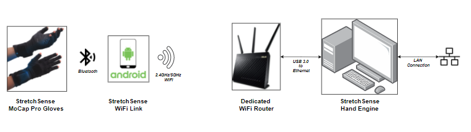
Alternate Wi-Fi Setup Configuration
If you do not have a second ethernet port on your PC, or you do not have a USB to ethernet adaptor, an alternative configuration is available. Remove the ethernet connection to your existing LAN from the Hand Engine PC and connect that to the dedicated Wi-Fi router, then connect the Hand Engine PC to a second port on the dedicated Wi-Fi router. Note you may need to configure your LAN to allow the dedicated router to connect.
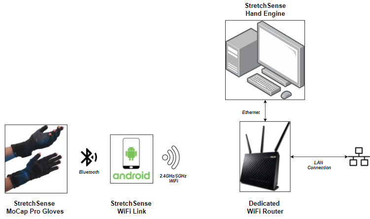
Steps for Setting up the router
-
Plug in the power cable of the router and turn it on - switch on the back
-
Plug in the yellow LAN cable into of the 4 yellow LAN accesses at the back of the router
-
Plug in the other end of the yellow LAN cable via the D-Link adapter (LAN to USB) or directly via the LAN access into your computer
-
The driver for the D-Link adapter should install automatically on your computer. If it doesn’t (check device manager), there’s currently no documented way to install the driver manually. So, if this is the case, simply use the LAN cable directly.
-
If not changed, the network adapter priority order is set automatically and the router gets the highest priority, which means that there’s no access to the local network or the internet as soon as the router is plugged in, as described in step 3.
-
When the router is plugged in, a browser window should open leading to the router configuration page.
-
If the login has changed and you don’t know the login data, you can simply reset the router and set the login yourself via the setup wizard, which will open in the browser automatically.
-
The configuration page has useful tabs showing which devices are connected with the router or tools like the traffic analyzer, to see if data is sent via the router (debugging tool).
-
Use the router login from above (if not reset) to enter the ASUS_5G Wi-Fi network with your Android phone (should show as a device on the router configuration page)
-
Given you know the IP address of the network adapter (type the command ipconfig in Command Prompt) you can set the IP address and port in the Android Wi-Fi Link App, connect a glove and send data to HE.
How to Setup the Wi-Fi bridge App
-
Install the StretchSense WiFi Link app to your Android phone.
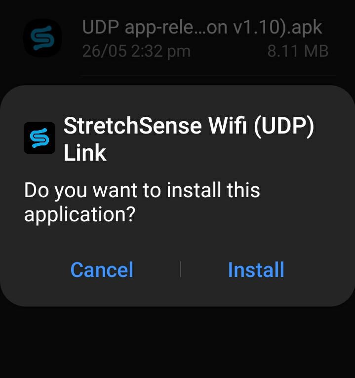
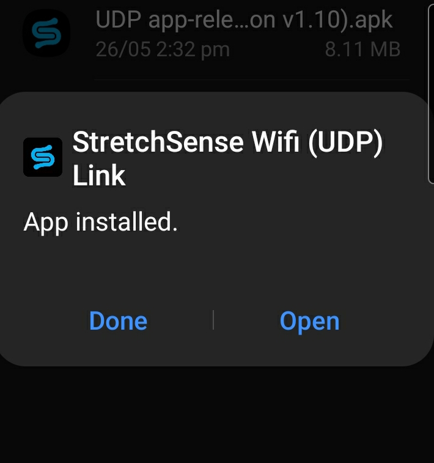
-
Connect the Android device to the Wi-Fi router network.
-
Turn the gloves on at the circuit and the circuit will be blinking slow blue.
-
Open the StretchSense WiFi Link application on your phone 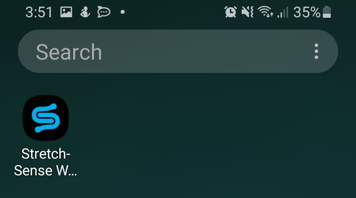
-
Select Start Pairing (allow location access if prompted)
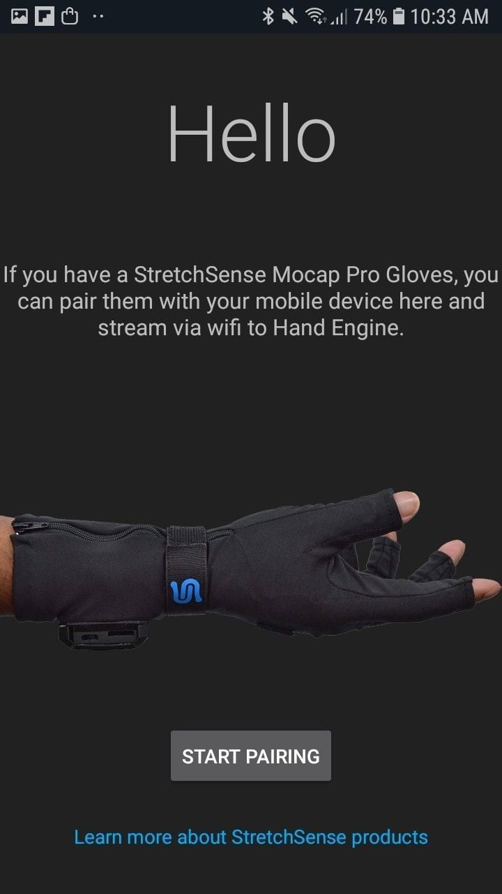
-
Please enter the IP address and Port number of the computer where Hand Engine is running in the format shown in the image below (highlighted by blue box eg 192.168.1.1:41235)
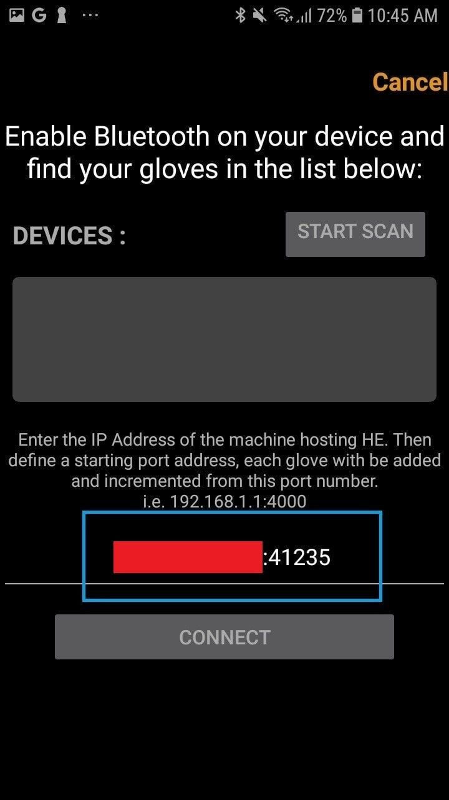
-
While you have your glove turned on and blue LED slowly blinking press select Start Scan. A 10s countdown timer starts and your gloves should appear. Tick the checkboxes for the available gloves and select Connect
Important: Please make sure your Bluetooth USB dongles are NOT plugged in when attempting to pair to the WiFi app.
Note: We are using two gloves for this demonstration (see image below)
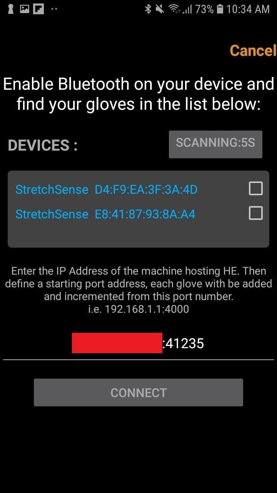
-
Once connected the bar graph for the glove will populate with the raw data coming from the glove and you will be able to see live data from the sensors. Above the bar graph are the IP address and port number that the glove is streaming data on.
For example in the image below the IP address is 192.168.1.1 and the port number is 41235.
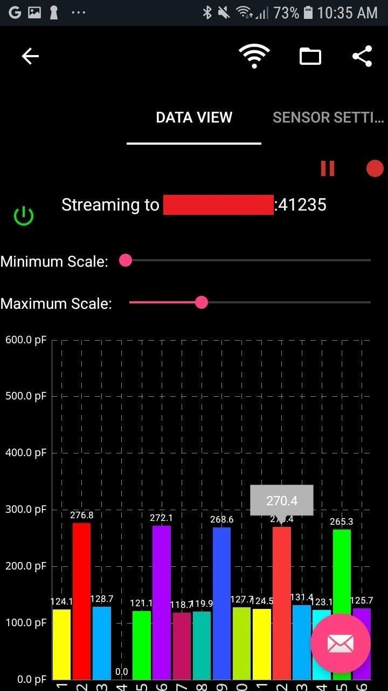
Please note: If you have a second glove you should see a second bar graph if you scroll down on the app (see image below) indicating that glove 2 is also streaming. It will automatically take the next port number for streaming that is if glove 1 was streaming on 41235 then glove 2 will do so on 41236
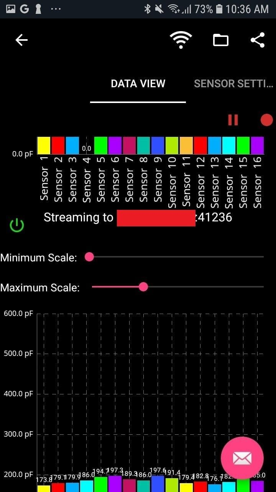
-
Open Hand Engine and click on the glove connection dropdown,then click on Add network port.
Please Note: On the PC running Hand engine make sure firewall rules have allowed Hand Engine to listen to the port that the phone app is streaming to.
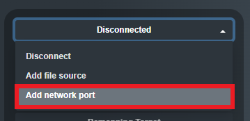
-
Enter the port number (for example 9000 and 9001 for the second glove), and click on Submit. The current version of the app uses a UDP connection:
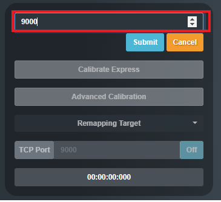
-
You should immediately see the hand status bar indicating the connection is active
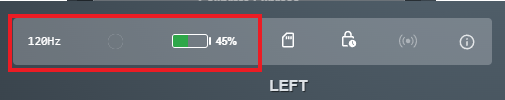
-
The performer can now carry the phone on their body to extend the possible wireless range of the gloves.
-
Use Hand Engine as normal from this point onwards by setting up your Performer and Profile as well as your calibration.
Known potential issues:
-
If you have a complex network arrangement between your stage Wi-Fi access point and the PC running Hand Engine (for example a number of switches and a firewall between the WiFi AP and the PC), you may see a reduced sample rate of your gloves (i.e. less than 120s/sec).
-
On the PC running Hand engine make sure firewall rules have allowed Hand Engine to listen to port that phone app is streaming to.
-
You will need to Enable Installation from Unknown Sources in the settings of your phone, and we recommend Disabling Battery Optimization for this application